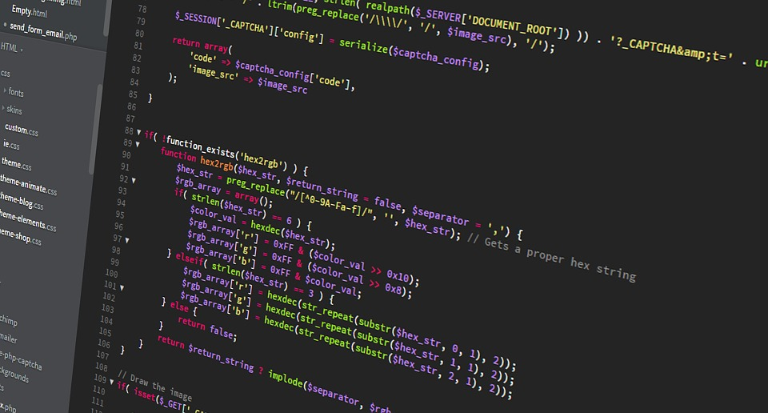

The Web
Categorie
Full Stack Development
Profiel Back End Web Developer Software

Een Back End Web Developer richt zich op server side van website of App en betreft de data laag en daarbij behorende technische infrastructuur. Gelet op aard en karakter zijn voor back end web development specifieke software tools beschikbaar.
→ zie: Wikipedia Front End Back End
Net zoals een timmerman kan kiezen tussen verschillende gereedschappen om een bepaalde taak uit te voeren, is het meestal zo dat bij deze vakman per soort taak één specifieke tool de voorkeur geniet. Bij web development zijn er ook voorkeuren van tool per soort taken. Het is met deze benadering dat navolgende is samengesteld.
Onderstaande tools "per soort taak" die worden uitgewerkt zijn gekozen op basis van wat op dit moment uit de praktijk blijkt bij zowel werkgevers als bij developers een trend te zijn. Meestal ingegeven door economische redenen. In onderstaande uitwerking wordt daarop dan ook voorgesorteerd, maar niet gezegd dat die uitwerking een absolute gegeven is.
Bijvoorbeeld gestel bij "Big Acme Company" is er een App, destijds gebouwd in Java en al meer dan 20 jaar robuust, gedegen, zonder issues prima functionerend; ingeval van changes vraagt opdrachtgever om developer met Java expertise. En als dat veel voorkomt, dan is de trend naar Java, hetgeen eigenlijk niet zo heel veel zegt over of Java nu "de beste keuze" is cq zou zijn als heden vanaf scratch begonnen zou worden.
Taken
Profiel Full Fledged Front End Web Developer wordt verondersteld. Voor Back End Web Developer Software komt daarbij maken Micro Services en volledige server side programmeren met behulp van framework. De Back End Web Developer Software beheerst navolgende tools combinaties adequaat om taken te kunnen verrichten.
Beschreven tool combinaties betreffen soort taak mét voorkeur codingtaal én voorkeur database. Omdat het leren en beheesen van een combinatie veel tijd vergt is het niet handig om als beginner developer alle combinaties tegelijk in een keer ter hand te nemen. Aldus de vraag welke van de combinaties te leren?
Zoals in deze guide hiervoor beschreven is er een trend richting JavaScript (JS) everywere. Deze trend is zowel bij opdrachtgevers als developers. JS is prima en ligt technisch dicht bij 'in deze guide hier voorafgaand'. Het ligt daarom voor de hand om primair daarop te concentreren. Om pas daarna volgende combinaties ter hand te nemen.Node.js
 Waar JavaScript in de front end wordt uitgevoerd cq executed door de browser, is er in de back end géén browser. Daarvoor in de plaats is Node.js; dat dus naast JavaScript ontwikkel platform óók als runtime "engine" ingezet kan worden om JavaScript op server side te laten functioneren. Voordeel is dat developer alleen JS hoeft te hanteren voor zowel front end als back end.
Waar JavaScript in de front end wordt uitgevoerd cq executed door de browser, is er in de back end géén browser. Daarvoor in de plaats is Node.js; dat dus naast JavaScript ontwikkel platform óók als runtime "engine" ingezet kan worden om JavaScript op server side te laten functioneren. Voordeel is dat developer alleen JS hoeft te hanteren voor zowel front end als back end.
→ zie: Profiel Basic Front End Web Developer Node.js
- Express.js
-
Express.js is een free open source framework voor Node.js, en ontworpen voor het bouwen van webApps en API's in programmeertaal JavaScript. Het is de defacto standaard server framework voor Node.js. Daarnaast zijn er ook Koa en Adonis die verder niet worden uitgewerkt.
→ zie: Wikipedia Express
→ zie: Website Express get startedExpress is relatief minimaal met veel functies die beschikbaar zijn als plugins. Express is voor JS de back end component. Niet vergelijkbaar maar complementair aan front end frameworks zoals React, Vue of Angular voor bouwen full stack Apps. In bijgaande tutorial wordt gebruik gemaakt van plugin Postman om tijdelijk een database te simuleren. voor verdere uitwerking van databases zie profiel Back End Web Developer Database.
→ zie: YouTube Videotorial Express
Python
 Python wordt heden hoofdzakelijk ingezet voor Machine Learning, Artificial Intelligence (AI) en Data Analyse. Python is van oorsprong bedoeld als een gemakkelijk leesbare taal. De opmaak is visueel overzichtelijk en gebruikt vaak Engelse trefwoorden waar andere talen interpunctie gebruiken. In tegenstelling tot veel andere talen gebruikt het geen accolades om blokken af te bakenen, en puntkomma's na instructies zijn optioneel.
Python wordt heden hoofdzakelijk ingezet voor Machine Learning, Artificial Intelligence (AI) en Data Analyse. Python is van oorsprong bedoeld als een gemakkelijk leesbare taal. De opmaak is visueel overzichtelijk en gebruikt vaak Engelse trefwoorden waar andere talen interpunctie gebruiken. In tegenstelling tot veel andere talen gebruikt het geen accolades om blokken af te bakenen, en puntkomma's na instructies zijn optioneel.
→ zie: Wikipedia Python
→ zie: Website Python get started
- Django
-
 Django is een free open source Python Web framework op hoog niveau dat snelle ontwikkeling en een schoon, pragmatisch ontwerp aanmoedigt. Gebouwd door ervaren ontwikkelaars, neemt het veel gedoe weg van webontwikkeling, zodat gebruiker zich kan concentreren op het schrijven van App zonder het wiel opnieuw uit te vinden. Daarnaast is er ook Flask en Web2py die verder niet worden uitgewerkt.
Django is een free open source Python Web framework op hoog niveau dat snelle ontwikkeling en een schoon, pragmatisch ontwerp aanmoedigt. Gebouwd door ervaren ontwikkelaars, neemt het veel gedoe weg van webontwikkeling, zodat gebruiker zich kan concentreren op het schrijven van App zonder het wiel opnieuw uit te vinden. Daarnaast is er ook Flask en Web2py die verder niet worden uitgewerkt.
→ zie: Wikipedia Django
→ zie: Website Django get startedHet primaire doel van Django is om het maken van complexe, database gestuurde websites te vergemakkelijken. Het framework benadrukt herbruikbaarheid en "pluggability" van componenten, minder code, lage koppeling, snelle ontwikkeling en het principe van herhalingen voorkomen. In bijgaande tutorial wordt gebruik gemaakt van default go to database SQLite. Voor verdere uitwerking van databases zie profiel Back End Web Developer Database.
→ zie: YouTube Videotorial Django